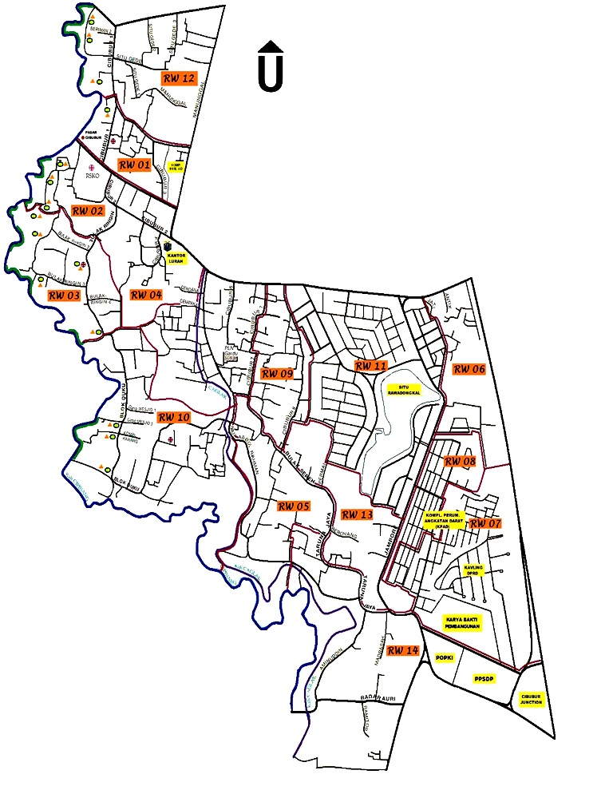

Kelurahan Cibubur
Pelayanan Publik
Pelayanan Publik
Mengenal lebih dekat struktur dan fungsi Kelurahan Cibubur

Lurah Cibubur

± 450 Hektar
Tingkat Kecamatan - 2024
Tingkat Kecamatan - 2024
Tingkat Kecamatan - 2023
Tingkat Kecamatan - 2023
Tingkat Kota - 2022
Tingkat Kota - 2022
Tingkat Kecamatan - 2022
Tingkat Nasional - 2021
Tingkat Kota - 2021
Tingkat Kecamatan - 2021
Tingkat Kecamatan - 2020
Tingkat Kecamatan - 2019